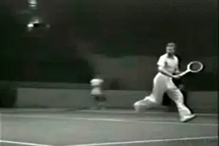
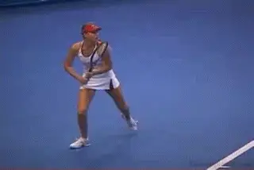
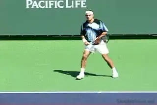
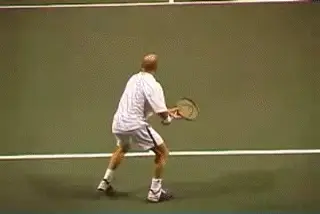
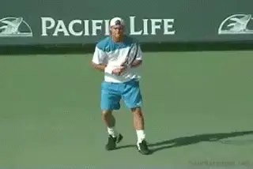
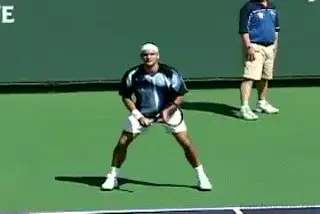
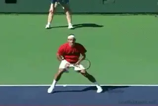
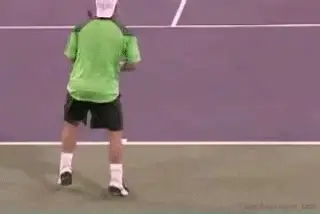
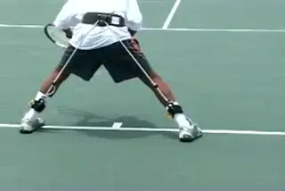

The Athletic Foundation¶
Advanced Reaction Steps¶
Pat Doughert¶

Movement is the strength that unites the champions from all eras.
I believe that strength of movement is the single greatest weapon in a winning game, equally important in developing offense and defense. Explosive quickness gives you opportunities to control play, assert your offense, and attack. Having the speed to defend every inch of the court pressures your opponent to execute higher quality shots, which will result in more errors.
Recently, I was fortunate to spend time with one of the all-time greats, Ivan Lendl. One question I asked him: "What is the greatest strength shared by the best players of any era?" Ivan didn't hesitate: "Movement," he answered. "The best players of every era have also been the players with the best movement."
Sprints
Players who are slow to react fall behind the tempo of the rally. This forces them to rush their movement to try to catch up. A late start means greater risk of getting to the ball late and missing opportunities to play offensively. It affects a player's ability to control the ball and sustain longer rallies. Players whose timing is out of sync appear to be on the defensive and scrambling to keep up with the rally pace.
Technique and timing make Federer look effortless.
Movement specialists like Roger Federer have mastered the skill of timing their movement to stay slightly ahead of the pace of the rally. Federer's explosive, well timed starts, agility, smooth footwork, and instantaneous changes of direction enable him to look effortless. He makes playing tennis look fluid and artistic. It is the combination of his technique and timing that makes it happen.
In reality, tennis points are nothing more than a series of short, multi-directional sprints. Primarily these are lateral sprints, but they include movement in every direction to every point of the court, ranging in length from a few feet to a few yards. Like the sprinter, it is extremely important to react explosively to the opponent's strike of the ball and then to be equally quick to recover.

A game of sprints in all directions.
In my first article, we discussed the Athletic Foundation, the basic posture that makes this explosive possible. Now we'll outline the two most common first step reactions in pro tennis. I call these the Pivot Step and the Drop Step. The Pivot Step and the Drop Step are advanced moves that all players must execute if they want to play at their highest level possible.
Precious Time
At an average rally speed, the ball travels the length of the court from baseline to baseline in less than 2 seconds. At the pro level, sometimes that is reduced to little more than a second. At most you have 2 seconds to react, move and position to hit. How far can you travel in 2 seconds?
Reacting successfully to the ball in tennis is dictated by this time interval, but also by the basic laws of motion. The human body is an object that has mass. In the ready position, the body is also in a state of inertia. When enough force is applied to overcome this state of inertia, the body is put in motion and establishes momentum in the direction of the movement.

A lower center of gravity means better use of lower body muscles.
Your ability to put your body in motion is directly related to your center of gravity. In the ready position, the wider your stance, the lower your center of gravity. This is what the wide base of the athletic foundation is all about. By bending your knees, widening your base and lowering the hips, you lower your center of gravity. Positioning lower to the ground enables you to better access the strength of your lower body muscles to achieve greater stability and greater control of your body mass. This wide base creates less of a load on the leg muscles by distributing the body weight so that you can use the hip and gluteus muscles. Put simply you are in a position to initiate your movement more explosively.
If you try to lower your center of gravity from a narrow base with your feet too close together, the load of your body weight distributes into the lower thighs just above the knees. This actually makes it more difficult to stay down and causes your leg muscles to fatigue more quickly.
[Learning to manage a consistently low center of gravity throughout play creates the fluid, smooth and agile look of a pro. It is the prerequisite for explosive movement with either of the two advanced first moves, the Pivot Step or the Drop Step.]
With a base of 2 to 3 shoulder widths, you can go from rest into motion faster, generate more power in your stroke production, and reverse directions more quickly. Which first step a player uses will vary depending on the width of the footwork base and the height of their center of gravity at the moment of reaction, as well as far he must travel to the ball.

At times pro players will use a basic step out.
First Step Reactions
I would not disagree with the school that teaches a narrower ready position as a basis for learning the basic stroke patterns, as for example, in Welby Van Horn's article in this issue of TPA. (link.) Nor would I argue with teaching players to turn the body with a step out in the direction of the shot, as shown in the TPA articles by Bob Hansen. link This approach may ease learning how to prepare fully on the groundstrokes. But once a player has mastered the basic stroke patterns, it's time to evolve to the wider base as part of a more advanced Athletic Foundation, to become more successful at the higher levels of play.
At times you may see top players execute the step out for moving a step or two to hit. But under time pressure when covering greater distances, the step out is a slower reaction maneuver because it fails to establish much upper body momentum. Establishing upper body momentum in the first move is the key to explosive first step reactions. It begins by being low and establishing a wide base. This is why you will see players establish the wide base. In fact the more challenged they feel, the wider the base becomes. This allows the player to use the more explosive reaction steps I've identified, the Foot Pivot and the Drop Step.

Often players begin the first step reaction when they are still in the air.
Unweighting
Both these reaction step patterns start when the player unweights from the ready position. Unweighting is a technique that great movers often use just prior to the opponent's contact with the ball. Unweighting helps the player overcome the effects of inertia when he both feet are on the ground and the body has no directional momentum.
Unweighting is nothing more than a split step that elevates the player off the ground. Timed to the opponent's contact point, unweighting elevates the feet off the ground while the player is determining where the ball is going. By the time the feet hit the ground, the player often has already begun to adjust the feet for the movement pattern to the ball.
The Foot Pivot is the most common reaction step in pro tennis.
The Foot Pivot and Drive
The foot pivot and drive maneuver are the most first step reaction technique in pro tennis, particularly on hard courts where traction is not a problem. The foot pivot and drive are effective when the ball is within a few steps away. You see this technique most commonly used during groundstroke rallies around the center of the court and on the return of serve.
Players typically begin the foot pivot from a base of approximately 2 shoulder widths. It starts with a quick, hard push off the outside foot (the foot furthest from the direction of movement). The inside foot (the foot nearest to the direction of movement) then pivots, turning the toe in the direction of movement.
The outside foot essentially drives the body weight until it is positioned over the inside foot. [[This creates momentum with the shoulders leading in the direction of movement.] With the body weight over the inside foot, the inside foot can drive hard and achieve maximum traction.] You see Federer use this technique to load his weight on the pivot foot, especially on his returns.

Federer uses the Foot Pivot on returns.
Note: When you play on slippery surfaces such as clay or grass, you must use added caution when attempting the foot pivot and drive. If you drive too hard off the outside foot, you'll risk losing traction as your body weight shifts off the outside foot. Also, be careful not to step too far in the direction you want to move, or it will slow you down considerably. All you want to do is pivot the inside foot and use it to drive your body into motion.
The Drop Step and Drive
Top players often play from footwork bases as broad as 3 shoulder widths. As we noted, you can see a correlation between the width of the base and how challenged they feel by the oncoming ball.

The outside foot pushes, the inside foot drops under the body and then drives the player toward the ball.
When players go to the wider base, the Foot Pivot technique is not as quick and effective at establishing upper body momentum. This is where the Drop Step comes in. The Drop Step and Drive technique is the quickest technique for reacting from a very wide base, especially on clay and grass. It is the preferred maneuver when reacting to more challenging balls that are greater distances away.
The Drop Step begins with the outside foot--again the foot furthest from the ball. The outside foot creates a controlled push, shifting the body weight towards the direction of movement. At the same time, the inside foot--the foot closest to the ball--slides under the torso. This establishes upper body momentum in the direction of movement.
With the full weight of the body over the inside foot and the shoulders leading in the direction of movement, the inside foot has maximum traction for a powerful drive to over come inertia and set your body in motion. Mastery of the Drop Step is critical in pro tennis for reaching wide balls, changing directions and staying even and/or getting ahead on time in baseline rallies.

Hewitt pushes with the outside foot as the inside foot drops underneath for an explosive first step.
Watch in the Hewitt forehand animation. The outside foot pushes the body weight in the direction of the shot. The inside foot drops under the torso. Now the inside foot is in position to drive the player explosively toward the ball.
You can actually see how the momentum has been created by looking at the angle of the torso. Notice that the entire torso is tilted in the direction of the movement. Because the move is so universal in high level tennis, there really can't be any doubt that this pattern generates greater speed. It results in quicker movement to the ball when small fractions of a second are the difference between creating and offensive opportunity or being forced to play defensively.

The A.P. Belt creates the Athletic Foundation for explosive first steps.
The Belt
Explosive movement to the ball starts with the Athletic Foundation and the wide base. This is why the A.P Belt is such a valuable training aid, as we detailed in the first article. It gives players a continuous feeling for Athletic Foundation during training. The result is that they maintain a wider base and remain lower so they can react explosively to the ball with either the Pivot or the Drop Step. It is highly recommended to speed your own footwork development. Yes, it is my product. But it was developed for a purpose, and that is to help players develop the critical quality of superior movement. If that's what you want, then you may want to experiment with the A.P. Belt for yourself. I've also worked out a special price offer just for TPA subscribers. (For more on the A.P Belt link.)
So that's it for the advanced reaction steps. In the future, we will look closely at the various footwork patterns moving to the ball, stride lengths, hitting stances and then do the same in our analysis of recovery techniques.